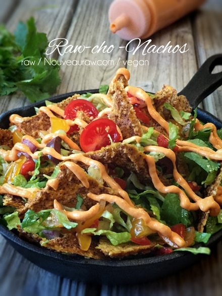

Raw-cho Nachos

~ raw, vegan, gluten-free ~
I am going to make this quick… what is there really to say about nachos? There isn’t a right or wrong way in making them. The only wrong way I guess is if you don’t make enough! Which typically is the case. Nachos leave room for personal preferences (switch up the fixings, use a different chip).
This party food is shareable… or not. Here is my recommendation when serving a crowd or even just your immediate family… Set up all of the possible nacho toppings in a buffet style. Each person gets their own plate to build their masterpiece.
Not only is this interaction more fun, everyone can tailor to their own taste buds… plus… Raw chips don’t stay crispy long once a wet ingredient is sitting on them. It’s just the law of physics. By creating single servings, the chips will be consumed in a reasonable amount of time, preventing the chips from wilting. Wilting chips… “No Bueno,” as my sister likes to say.
When building your plate of nachos, lead by example and do it right. There is a wrong way and right way in dishing up nachos.
Wrong way: While a mountain of chips with all the ingredients piled onto the top layer may look appealing, it’s no fun when all the goodies are gone from the top, and you’re just left with a pile of naked chips.
Right way: Instead make it your goal to have as many ingredients on each chip as possible. To achieve this, put one layer of chips on the plate, sprinkle on toppings. Repeat this process, and you will own a handsome plate of nachos. Lastly, sprinkle on fresh toppings like cilantro, scallions, tomatoes, and sliced jalapeños. Own that plate! Below I listed out quite a few options but please don’t let them limit your creativity. Go for the gusto and enjoy yourself.
Ingredients:
Preparation:
- Place one layer of chips on the plate, sprinkle on toppings, repeating this process building an incredible plate of nachos for yourself.
- Don’t be greedy and make too much that you can eat it all. Remember… the chips will go soggy and you will have to toss leftovers unless soggy raw chips are your thing.
- Lastly, sprinkle on fresh toppings like cilantro, scallions, tomatoes, and sliced jalapeños.
- Eat right away! O’laa!
© AmieSue.com